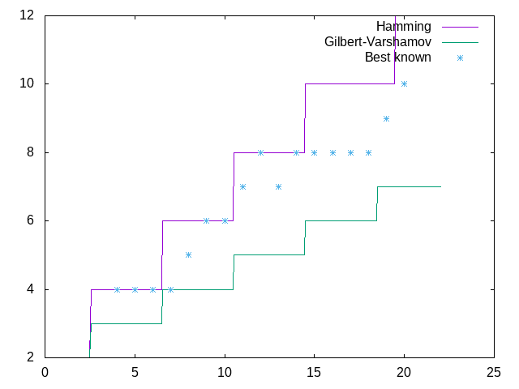

Теория информации, решения задач части 3
Table of Contents
1 Задание 3.1
Необходимо доказать, что коды Хэмминга и код Голея (23,12) с \(d = 7\) удовлетворяют границе хэмминга с равенством. Это несложно показать.
Граница Хэмминга (в общем виде и для бинарных кодов):
\begin{align*} M \leq \frac{q^n}{\sum_{i=0}^{t}{{{n}\choose{i}} (q-1)^i}} = \frac{2^n}{\sum_{i=0}^{t}{{{n}\choose{i}}}} \end{align*}Известно, что для кодов Хэмминга верно \(n = 2^r - 1, \ k = 2^r - r - 1, \ d = 3\). \(d = 2 + 1\), значит \(t = 1\). Подставим эти параметры в уравнение:
\begin{align*} M \leq \frac{2^n}{{n\choose0} + {n\choose1}} = \frac{2^{2^r-1}}{{2^r-1\choose0} + {2^r-1\choose1}} = \frac{2^{2^r-1}}{1 + 2^r-1} = \frac{2^{2^r-1}}{2^r} = 2^{2^r - r - 1} = 2^k \end{align*}Очевидно, что для любого линейного кода \(M = 2^k\), отсюда граница Хэмминга точна до равенства.
Аналогичные рассуждения применим к коду Голея (23,12), \(t = 3\).
\begin{align*} M \leq \frac{2^n}{{n\choose0} + {n\choose1} + {n\choose2} + {n\choose3}} = \frac{2^{23}}{{23\choose0} + {23\choose1} + {23\choose2} + {23\choose3}} = \frac{2^{23}}{1 + 23 + 253 + 1771} = \frac{2^{23}}{2^{11}} = 2^{12} \end{align*}Видим, что мы получили \(k = 12\), как в определении кода Голея.
2 Задание 3.2
Вариант 87: \(n = 25, k = 9, d = 14\).
Зададимся \(n\) и \(d\). Оценим \(M = 2^k\) через границы Хэмминга и Варшамова-Гилберта (как максимальная и минимальная тривиальная оценки).
Через Хэмминга:
\begin{align*} M \leq \frac{2^n}{\sum_{i=0}^{t}{{{n}\choose{i}}}} = \frac{2^{25}}{\sum_{i=0}^{6}{{25\choose{i}}}} = 136 \end{align*}Таким образом, \(k \leq log_2{136} = 7\).
Граница Варшамова-Гилберта для \(q = 2\) выглядит следующим образом:
\begin{align*} 2^{n-k} > \sum_{i=0}^{d-2}{{n-1 \choose i}} \end{align*}Подставим реальные значения:
\begin{align*} 2^{25-k} > \sum_{i=0}^{12}{{24 \choose i}} = 9740686 , \ \ \frac{2^{25}}{9740686} > 2^k , \ \ k < 1.76 \end{align*}Таким образом, граница Варшамова-Гилберта дает нижнюю оценку \(k \ge 1\), то есть гарантирует существование кода с \(k = 1\) при заданных \(n\) и \(d\).
Из таблицы кодов с максимальным \(d\) видно, что для \(n = 25\) и \(d = 14\) есть код с \(k = 3\), что удовлетворяет полученным результатам.
3 Задание 3.3
Вариант 87: \(n = 25, k = 9, d = 14\).
Будем оценивать \(d\) через \(n\) и \(k\). воспользуемся теми же границами, что и в прошлом задании.
Напишем код, перебирающий \(d\) через границу Хэмминга и находящий максимальное \(t\), при котором условие проверки верно. Код находится в приложении. Полученное \(d\) (максимальное, удовлетворяющее границе Хэмминга) – \(10\).
Аналогично сделаем для границы Варшамова-Гилберта: \(d <= 7\). Таким образом, разумно было бы искать максимальный \(d\) в промежутке \([8\ldots10]\). И, действительно, лучший известный код для таких параметров имеет \(d = 8\).
4 Задание 3.5
Пусть \(n = 2 * k\). Посмотрим на границы Хэмминга и Варшамова-Гилберта для этих параметров для первых значений \(k\).
Построенный график \(d(k)\) (где \(n = 2*k\)) иллюстрирует соответствие лучших кодов (взятых из таблице в учебнике, конец главы 3) и двух границ.

Видно, что с увеличением \(k\) минимальное расстояние отдаляется от границы Хэмминга. Поскольку вывод границы Хэмминга основана на задаче упаковки пространства размерности \(n\) шарами, могу предположить, что задача усложняется с увеличением \(n\).
Цитируя статью с wolfram mathworld1:
The analog of face-centered cubic packing is the densest lattice packing in four and five dimensions. In eight dimensions, the densest lattice packing is made up of two copies of face-centered cubic. In six and seven dimensions, the densest lattice packings are cross sections of the eight-dimensional case. In 24 dimensions, the densest packing appears to be the Leech lattice. For high dimensions (∼1000-D), the densest known packings are nonlattice.
И действительно, для пространства 24 существует выделенный хороший код Голея2. То есть можно полагать, что сложность достижения \(d\) сводится к сложности решения задачи об n-мерной упаковке сфер.
5 Задание 3.8
Реализация метода в приложении. Примеры запуска на разных данных (код генерирует матрицу \(H\)):
Код (8,1) с \(d = 8\) по границе Варшамова-Гилберта:
λ> distance $ buildGilbertVarshamovH 8 1 8 λ> putStrLn $ showM $ buildGilbertVarshamovH 8 1 10000001 11000000 10100000 10010000 10001000 10000100 10000010
Код (8,3) с \(d = 3\).
λ> distance $ buildGilbertVarshamovH 8 3 3 λ> putStrLn $ showM $ buildGilbertVarshamovH 8 3 00000001 11100000 10011000 01010100 11010010
Алгоритм работает таким образом. На каждом шаге мы имеем \(s < n\) уже построенных столбцов \(x\) будущей матрицы \(H\). Мы пытаемся найти такой \(v\), что любые \(d-1\) комбинаций векторов \(d:x\) линейно независимы. \(v\) мы выбираем, перебирая по всем столбцам высоты \(r\). Оценим стоимость одного перебора – проверки на лнз, проделанной для каждого \(v\). Мы имеем, грубо говоря, \(d\) столбцов которые необходимо проверить на лнз. Мы смотрим на все бинарные комбинации этих столбцов (которых \(2^d\)) и для каждого выполняем сумму и проверку на ноль. Сумма выбранных \(q < d\) векторов стоит \(q*k\) операций сложения. Итого имеем \(d*r*2^d\). \(d < n\), поэтому можем оценить одну проверку на ЛНЗ в \(n*r*2^n\). Также каждая проверка совершается для \(v\), всего \(v\), как уже было замечено, \(2^r\). Всего мы проделываем это для каждого столбца, поэтому домножаем на \(n\). Итоговая оценка алгоритма \(O(n r 2^n 2^r * n) = O(n^2 r 2^{rn})\).
Перейдем к практическим результатам. Исходя из оценки, я перебирал \(n\) при \(k = 3\) (так асимптотика максимальна, потому что \(r\) больше). Моя программа на (18,3) (\(d = 8\)) выдает решение за 22 секунды, на (19,3) \(d = 9\) работает больше двух. Если же \(k\) высоко, то алгоритм работает быстро для больших \(n\) (например, для (30,20) почти мгновенно).
6 Приложения
К заданию 3.3 (поиск \(d\) через \(n\) и \(k\) по границам Хэмминга и Варшамова-Гилберта):
findDRange :: Integer -> Integer -> (Integer,Integer) findDRange n k = (lastB hammingCond [1..n], lastB gilbertVarshamovCond [1..n]) where lastB cond = unsafeLast . takeWhile cond cast :: (Integral a, Num b) => a -> b cast = fromIntegral hammingCond :: Integer -> Bool hammingCond d = let t = (d - 1) `div` 2 in (2.0^k::Double) <= ((2.0^n) / (cast (sum $ map (combinationsN n) [0..t]) :: Double)) gilbertVarshamovCond :: Integer -> Bool gilbertVarshamovCond d = 2^(n-k) > (sum $ map (combinationsN $ n -1) [0..(d-2)])
К заданию 3.8:
buildGilbertVarshamovH :: Integer -> Integer -> [BVector] buildGilbertVarshamovH n k = genVectors (n-1) [initVec] where genVectors 0 acc = acc genVectors l acc = let a = fromMaybe (error "couldn't find one") $ find (\x -> not $ linearDependentSubset (d-1) (x:acc)) (binaryVectors r) in genVectors (l-1) (a:acc) d = snd $ findDRange n k r = n - k -- Vector 00..01 of length r initVec = True : replicate (fromIntegral $ r-1) False